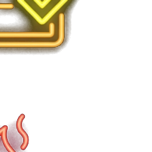

引導倉庫管制品項的行政申報、實體移置、帳卡核銷與實體破壞流程
制定：倉儲管理 許家修 | 版次：01
💡 左右拉動下方滑桿，對比物品實體移置前後的帳務處理規則：
在簽呈核准但實體尚未移置到廢棄物貯存區之前，倉儲人員不得提前執行庫存卡扣帳。 這是為了避免發生系統除帳但實體仍在倉儲區的「帳物不符」風險。
實體移出倉庫移入指定廢棄物貯存區後，即代表該品項正式脫離可用庫存管制。 倉儲人員應立即於庫存帳卡 (SOP-WH-01-A) 上執行除帳作業。移置後物品絕對不得再送回倉庫。
❓ 請問是否可以在實體物品尚未移出倉庫前，先在帳上進行庫存扣帳？

報廢申請表 (SOP-WH-09-A) 及銷毀紀錄表 (SOP-WH-09-B) 正本應交予倉儲人員留存。 必要時，倉儲人員得提供影本予財務或其他相關行政單位，作為帳務沖銷之會計憑證。
「落實法規安全，維護品質誠信」